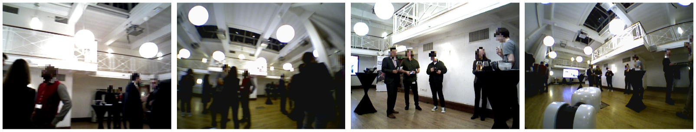

{{ page.title }}
Published in UKRAS20 Conference: “Robots into the real world” Proceedings
Viktor Schmuck Oya Celiktutan
Department of Engineering, King's College London

|
Abstract
We introduce an egocentric dataset recorded from a robot's point of view (robocentric), which has been created to serve as a platform for indoor crowd analysis. The dataset features over 100,000 RGB, depth, and wide-angle camera images as well as LIDAR readings, recorded during a social gathering where the robot captured group interactions between participants using its on-board sensors. We evaluated three different human detection algorithms on our dataset to demonstrate the challenges of indoor crowd analysis from a robot's perspective.
|
Paper: [PDF] Proceedings: [UKRAS20] Data: [Contact SAIR lab]
|
Bibtex
@article{SchmuckCeliktutanUKRAS20,
title={RICA: Robocentric Indoor Crowd Analysis Dataset},
author={Schmuck, Viktor and Celiktutan, Oya},
journal={UKRAS20 Conference: “Robots into the real world” Proceedings},
pages={63--65},
year = {2020}
}